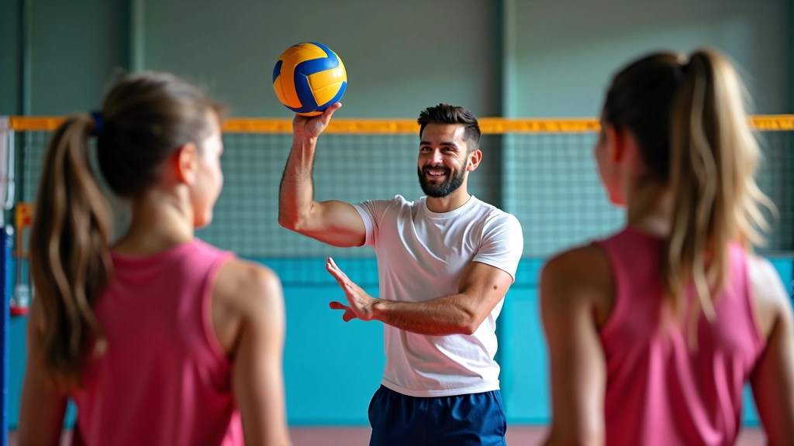

أساسيات الاستقبال السفلي الصحيح
تعلم المواضع الأساسية والحركات التي تشكل أساس كل استقبال فعال. نغطي وضع القدمين والذراعين والتوقيت الصحيح.
اقرأ المزيدتعلم أساسيات الحركات الدفاعية التي تحافظ على اللعبة حية
نحن نركز على تطوير مهارات الاستقبال السفلي والإنقاذ البنكيكي — التقنيات الأساسية التي تفصل بين الفرق الجيدة والفرق المتميزة. من خلال تمارين منظمة وتوجيهات واضحة، يمكنك إتقان هذه الحركات.
لماذا تستحق هذه التقنيات اهتمامك
الاستقبال السفلي والإنقاذ البنكيكي ليسا حركات اختيارية — فهما ضروريان. عندما تتقن هذه التقنيات، يمكنك الرد على أي كرة تأتي باتجاهك بثقة.
تقنيات موثقة تستخدمها الفرق الاحترافية
تمارين عملية يمكنك تطبيقها فوراً
إرشادات تفصيلية خطوة بخطوة
نصائح لتجنب الإصابات الشائعة

انضم إلينا وابدأ رحلتك نحو إتقان تقنيات الاستقبال والإنقاذ. سواء كنت مبتدئاً أو لاعباً متقدماً، لدينا ما يناسبك.
تواصل معنا الآنالاستقبال السفلي ليس حركة واحدة — إنه أساس الدفاع . عندما تتقن الموضع الصحيح والتوقيت، تصبح حائراً منيعاً. نحن نعلمك كيفية البناء من الأساسيات وصولاً إلى المواقف المعقدة.
الإنقاذ البنكيكي يبدو مستحيلاً في البداية، لكنه ممكن تماماً مع الممارسة الصحيحة. نركز على الأمان والتقنية السليمة حتى لا تعرض نفسك للإصابة. كل حركة لها سبب، وكل تمرين مصمم لبناء ثقتك.
ستتعلم قراءة اللعبة بشكل أفضل — توقع الكرات قبل وصولها . هذا هو الفرق بين اللاعب الجيد والاستثنائي. مع الوقت، تصبح هذه الحركات غريزية وتركز على الاستراتيجية.
اكتشف أفضل موادنا التعليمية
تعلم المواضع الأساسية والحركات التي تشكل أساس كل استقبال فعال. نغطي وضع القدمين والذراعين والتوقيت الصحيح.
اقرأ المزيدالإنقاذ البنكيكي من أصعب التقنيات لكنه يمكن أن ينقذ اللعبة. نشرح كيفية ممارستها بأمان وفعالية دون إصابات.
اقرأ المزيد
سلسلة من التمارين التي تحاكي ظروف المباراة الحقيقية. تركز على السرعة والدقة والثقة في المواقف الضاغطة.
اقرأ المزيدتقنيات الاستقبال
حركات الإنقاذ
قراءة اللعبة
تحسين السرعة
تقليل الإصابات
بناء الثقة
نعم بالتأكيد. نبدأ من الأساسيات ونبني ببطء. الصبر والممارسة هما المفتاح — معظم الأشخاص يرون تحسناً ملموساً خلال 4-6 أسابيع.
مرتين أو ثلاث مرات في الأسبوع مثالي للمبتدئين. لاعبون متقدمون قد يفضلون أربع أو خمس جلسات. الاستمرارية أهم من الكثافة.
إذا تعلمت الطريقة الصحيحة، فهو آمن جداً. نركز على حماية جسدك وتقنية سليمة من البداية. الخطأ يأتي من التقنية السيئة وليس من الحركة نفسها.
الاستقبال هو الرد المخطط على كرة معروفة. الإنقاذ هو الرد الطارئ على كرة غير متوقعة. كلاهما يستخدم نفس التقنيات الأساسية لكن في سياقات مختلفة.
الأساسيات تأتي بسرعة — أسابيع قليلة. الإتقان الحقيقي يستغرق أشهراً. لكن لا تتوقع عن التحسن — كل جلسة تضيف شيئاً جديداً.
ملابس رياضية مريحة وأحذية رياضية جيدة هي كل ما تحتاجه. لاحقاً، قد تختار حماة للركبة أو الكوع، لكنها اختيارية في البداية.
نستخدم ملفات تعريف الارتباط لتحسين تجربتك. بمتابعة استخدامك للموقع، فإنك توافق على سياسة الخصوصية الخاصة بنا.